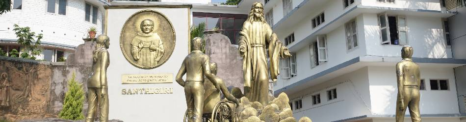

About Our College
Our History
Santhigiri College of Computer Sciences was started in 2002. This institution for higher education is affiliated to MG University, Kottayam and approved by AICTE, Delhi. Santhigiri College has a luminous profile having enchanting success stories without interlude.
THE LEGACY
Success and meritocracy of learning establishments owes much to the past credentials. Santhigiri College flash backs to Santhigiri Rehabilitation Institute (1988) engaged in the rehabilitation of Persons with Disabilities (PwD). Priority was laid on their higher education, since vocational training and corresponding placements were found not adequate for their rehabilitation. It was under this milieu Santhigiri College was started in 2002, with the prime objective of offering higher education to the PwD which would certainly enable them to get rehabilitated at the higher levels of the society. Santhigiri College of Computer Sciences is the visual fabrication of the charmed charity of the CMI Fathers bestowed with a unique social ambience. Fr.Paul Parakattel CMI envisioned the emanation of Santhigiri College attuned with social responsibility.